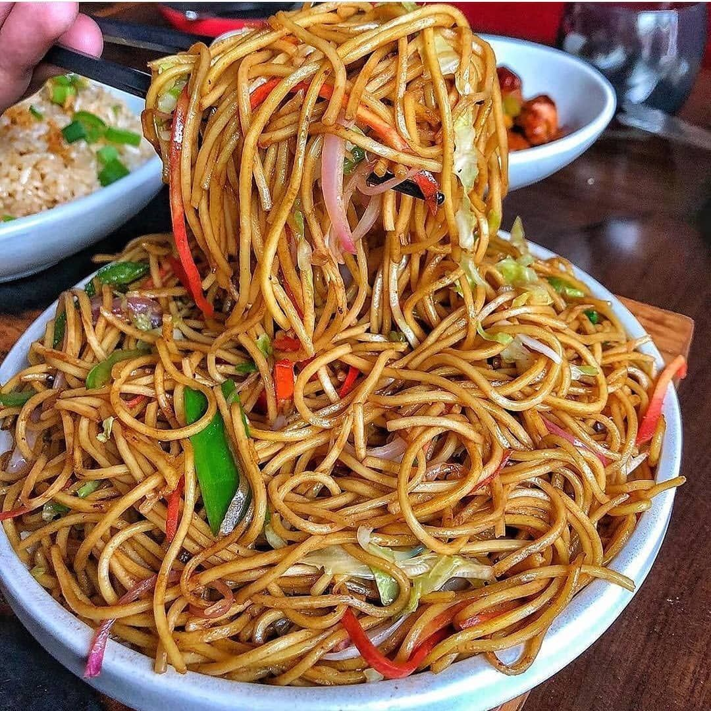

Chaumin

Description.
This is the popular Indian-Chinese noodles stir fry dish. This is loaded with vegetables and flavored with different
sauces.
Ingredients.
- 200 grams Noodles Hakka style
- cups Water
- 2 tablespoons Sesame oil
- 2 teaspoons Ginger finely chopped
- 2 teaspoons Garlic finely chopped
- 1 tablespoons Celery finely chopped
- ½ cup Red onion sliced
- ½ cup Carrot finely chopped
- ½ cup Capsicum (Green bell pepper) finely chopped
- ½ cup Cabbage finely chopped
- ⅓ cup Mushrooms finely chopped
- 1 ½ tablespoons Soy sauce
- 1 ½ tablespoons Tomato Ketchup
- 1 ½ tablespoons Chilli sauce
- 1 ½ teaspoon White distilled vinegar
- Salt to taste
- ¼ teaspoon Black pepper powder
- 2-3 tablespoons Spring onion (green onion or scallion) green part only
Steps.
-
Boiling the noodles:
- 4-5 cups of water to a rolling bowl.
- Once it starts boiling, add big pinch of salt and noodles.
- Let it cook for 4-5 minutes or as per the package instruction. Noodles should be soft, not mushy.
- Drain the water. Run under running cold water to stop the cooking process.
- Then add little oil and toss the noodles so they do not stick to each other. Keep it aside.
-
Making veg chow mein noodles recipe:
- the oil in a pan on medium heat.
- Once hot add chopped ginger, garlic and celery. Stir and saute for 30-40 seconds. DO NOT brown the garlic.
- Now add sliced onions and mix. Cook till onions get soft and translucent.
- Then add all the veggies (carrot, capsicum, cabbage, mushroom). Mix well and cook for 2-3 minutes only. Veggies
are just soft, do not overcook them.
- Now add soy sauce, ketchup, chilli sauce and vinegar. Mix well and let the sauce get heated through.
- At this time add salt and pepper to taste.
- Add boiled noodles and spring onion greens.
- Toss everything together till noodles is coated with sauce mixture well. Once noodles get heated through, turn
off the stove.
Thank you for Reaching this website.